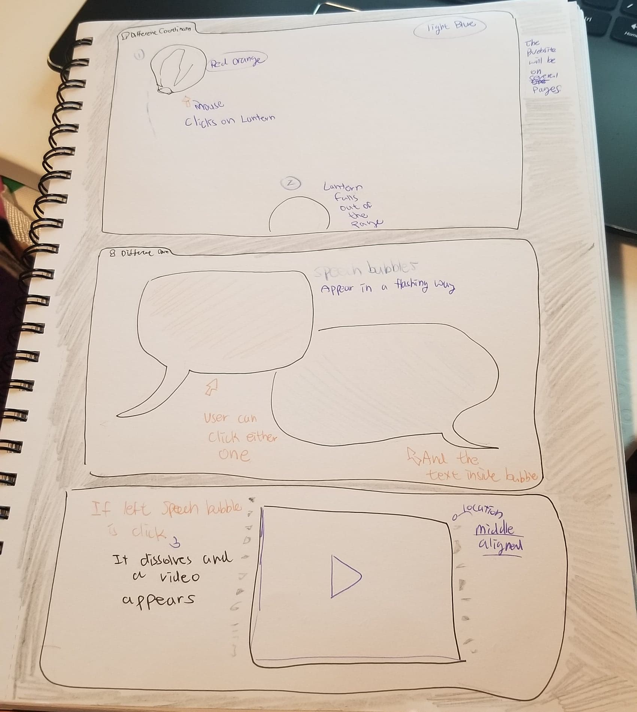
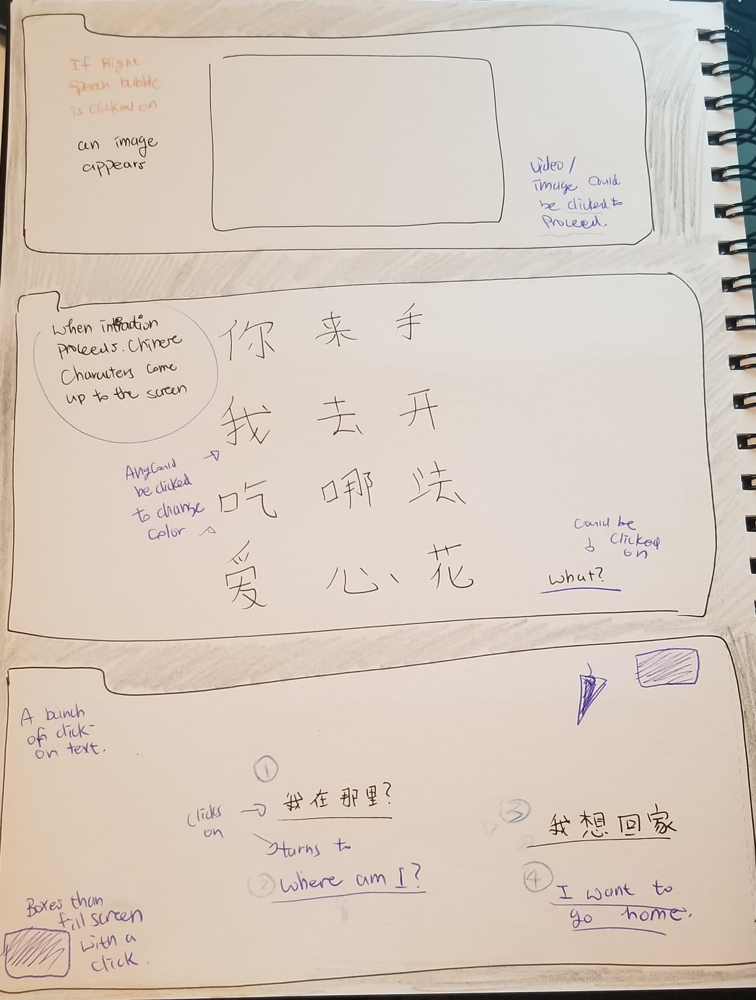
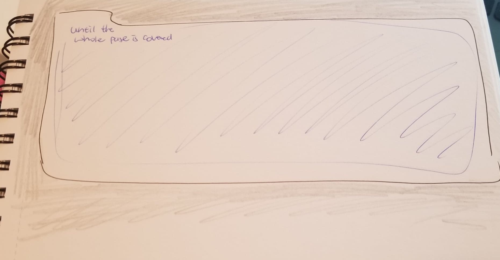

For my Project 3 idea, I was inspired by the net art example "My Boyfriend Came back from the War", by Olia Lialina, and its use of narrative through using links and gifs. I hope to create interaction through the use of clicking on images, text, and video, similar to Lialina’s piece. For my use of narrative, I will instead use a story of being in a foreign country and use a lighter and different color scheme. I hope to bring my personal experience living in China despite language barriers by incorporating the language. I want to also animate Chinese characters and images I make while I stayed there. If possible, instead of scrolling down, I want my piece to stay on one screen and changes. I also plan to be named it “Different Coordinates” and will create images and a video that relates the theme of being in a new place where one might not speak the language.
Below are the story board ideas for my netart project


Here is the link to my net art piece! Different Coordinates